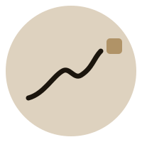
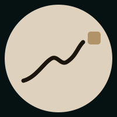
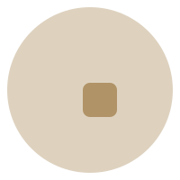
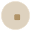
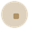
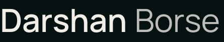
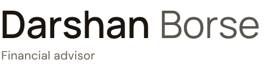
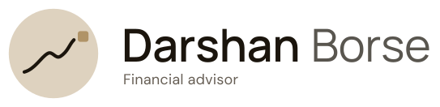
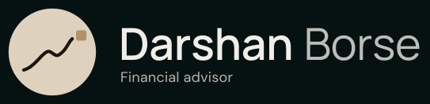
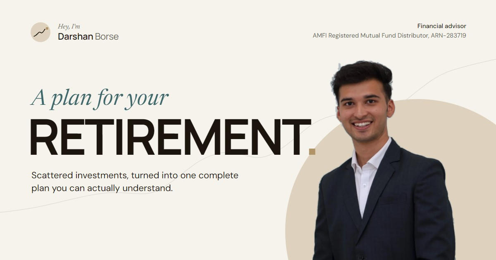

Darshan Borse — identity
The mark is the site's own signature: a line that rises through honest dips and ends in the gold full stop. The wordmark is the letterhead.
Mark

primary
on ink
small sizes: the full stop alone

Wordmark


with the titleLockup


In use
Hey, I'mDarshan Borse
Financial advisor, ARN-283719
Financial advisor, ARN-283719
About
Contact
Contact
Darshan Borse
Financial advisor, Home of Investments
+91 95294 35199Dhule and Pune
Share image

Why this
Every financial-advisor logo is a rising arrow, a shield or a pair of initials. This one is a sentence: the plan, with its bad months, arriving at a full stop. It is also already on every page of the site, so the site and the card say the same thing.
The full stop alone is the favicon, the WhatsApp profile ring and the app icon; at that size a line would vanish, a dot on a warm disc does not. Gold stays a mark, never text, exactly as on the site.